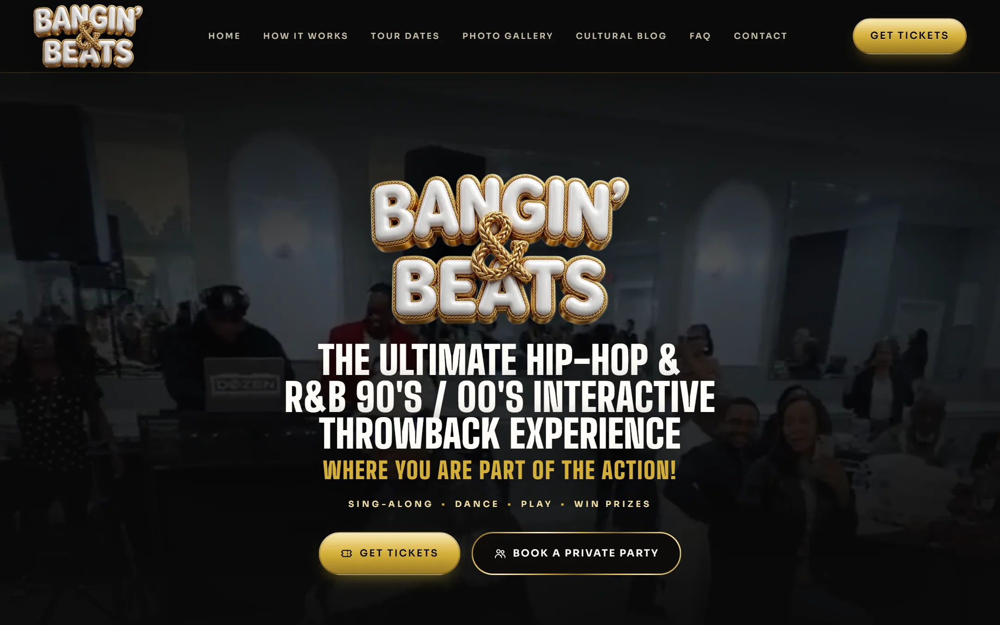
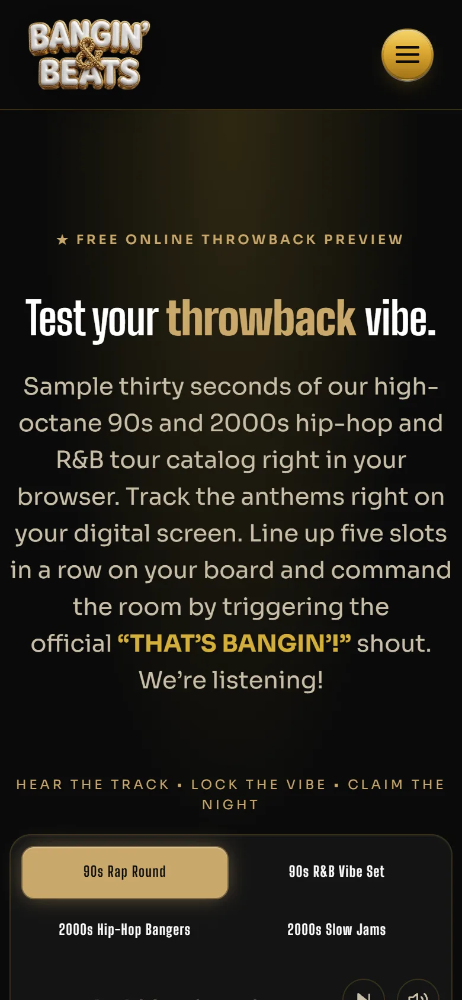

Formerly Take Me Back Bingo
Music bingo as a category is crowded with neon and chrome. Every competing site looks like a generic event landing page with a stock crowd photo and a CTA. The brief here was the opposite: build an identity that signals throwback at first glance, then keeps revealing detail the longer you look. The decision was to treat the whole site as a mixtape and to let the J-card be the home page.
The hero is a literal cassette J-card. On the left, a hand-drawn tracklist sits inside a flippable 5x5 bingo card with daubed squares already filled in. On the right, an animated cassette body with photo-real wound-tape reels rendered as inline SVG with feTurbulence and feDisplacementMap filters, two screws with phillips-head indents, a gold tape window, and a J-card label printed in three typefaces. The whole thing spins. Below it, an editorial bio with a drop cap, a pull quote, and a rotating message slot. The type system carries it: Bungee for display, Permanent Marker for script accents, Newsreader for editorial prose, Sora for body, JetBrains Mono for spec lines. Five faces, each doing a specific job.
/play. A 5x5 card I engineered from scratch: vanilla JS state machine, gold ink-stamp daub squares with radial-gradient + mix-blend-mode, a purple FREE space, and a yell-it-out call phrase to close a line.Then the identity becomes a product. The site ships with a free in-browser game at /play, a real 5x5 card that daubs itself as a DJ-mixed playlist runs underneath it, with a purple FREE space, gold ink-stamp daubers, and a yell-it-out call phrase to close a line. The bingo card isn't an illustration of the brand. The bingo card is the brand, and people can actually play it for free, no signup, no account. That single piece of functionality answers the “what is this” question better than any marketing copy could.
The Hip-Hop and R&B context also asked for a design language that respected the room. So I built a dual-surface system: cream paper for the editorial sections (How to Play, About, Book Your Party), deep oxblood-on-warm-black for the event sections. The two surfaces alternate down the page like sides of a record. Every CTA is a gold pill with a sheen-sweep keyframe and an inset highlight layer so it reads as physical, not as a button drawn on glass. Anti-theft handlers block right-click on imagery and drag-start on assets across the gallery, the cassette, the bingo card, and the event flyers. Not a real security control, but enough friction to filter out the casual save-image-as crowd, which matters when the photos are licensed from a paid shooter.
A music bingo brand lives or dies on two things, whether people can find a night and whether they tell their friends about it. The events page does the first job, the share system does the second, and a single feature flag governs the awkward third case where dates aren't yet announced. The decision was to treat all three as one production surface, not as three separate features bolted on.
Discovery starts with schema. The events page carries a full Event block per night with offers, performers, venue address, and ticket URLs across SimpleTix, Eventbrite, and Posh. A BreadcrumbList wires Home / Events / Summer Jam back to the canonical brand. The homepage ships a fourteen-question FAQPage tuned for People Also Ask, plus WebSite, Organization, and Person graphs that connect the brand, the in-browser game, and the designer behind both through a shared @id reference network. The sitemap declares four indexable URLs with explicit lastmod and priority. The result is that long-tail searches like music bingo near me, how does music bingo work, or music bingo Woodbridge NJ all surface the right page, with the right FAQ snippet rendered inline in the SERP.
Share is where the small details matter most. Every event card has a share button that prefers navigator.share() on mobile and falls back to a popover on desktop with copy-link, X, Facebook, WhatsApp, email, and a download-flyer item. The trick was iOS Safari. Their navigator.share() only permits a call while the tap's user-activation is live, and awaiting a fetch() first to attach the flyer as a file consumed that activation and made share() throw NotAllowedError. Silently. The button just did nothing. The fix was to call navigator.share() synchronously inside the click handler with title, text, and url only, and to surface the flyer download through the desktop popover where the activation rules don't apply. A small constraint, but it taught the whole production share flow how to handle the difference between platforms without a UX downgrade on either.
The inquiry modal carries the booking system. One form, one Formspree endpoint, but the topic dropdown is pre-selected by context. Click “Group of 6+” on an event card, the modal opens with that topic selected, the event name pre-filled as context, and the message placeholder rewritten to “Re: June 26, Summer Jam, tell us about your group, date, headcount, and the vibe.” Click “Bring us to your city,” same modal, different topic, different placeholder. When a private-booking topic is picked, three additional fields appear, event date, city, and expected headcount, because those are the answers the brand needs before quoting. The booking-only fields toggle via inline display rather than the hidden attribute, because the row uses display:grid which overrides [hidden]. A small detail, but it ships.
/events. Event schema, BreadcrumbList, and geo signals make the SERP entry rich: address, date, ticket price, and a Home / Events trail all visible before the click.navigator.share() fires synchronously with title, text, and URL. On desktop, a popover opens with copy-link, social destinations, and a download-flyer item that uses the card's data-share-image attribute.data-inquiry-topic and data-inquiry-context. The modal reads them, pre-selects the dropdown, rewrites the message placeholder, and exposes booking-only fields when the topic starts with “Private booking”./dates-pending.js file governs the “Buy Tickets” vs “Get Notified” copy across every CTA. Flip the constant inside it, every button on the site swaps copy and destination. Newsletter posts to /api/subscribe, a Resend Audience integration, with a floating toast for the confirmation.The dates-pending toggle is the piece I'm most proud of. Live event brands have a known dark period between announced calendars. The default move is to either freeze the marketing site or to paper over the gap with a placeholder page. Neither is acceptable when the brand is also a working SaaS funnel for private bookings. So the site treats “dates pending” as a first-class state. Every primary CTA carries data-cta-when-live and data-href-live attributes that hold the live behavior. /dates-pending.js reads a single boolean and either applies the live attributes or rewrites every button to “Get Notified” pointing at the footer newsletter. One toggle, full-site consistency, no hardcoded duplication, and the inquiry funnel keeps running the whole time.
The whole production system is held together by a tokenized design language that survives mobile. There are roughly thirty targeted breakpoints scoped to the components that needed them: the bingo card's daub circle width, the cassette's aspect ratio, the share popover's icon-only label below 520px, the event card's CTA row stacking below 560px, the nav hamburger swapping for the desktop link bar. None of those required a media-query rewrite of the whole stylesheet because the underlying tokens (the 1.25 type scale, the 8px grid, the motion tokens) absorbed most of the resizing for free.
Take Me Back Bingo couldn't be trademarked, so the brand had to change its name while it was already selling tickets and ranking in search. It became Bangin' & Beats™, and I rebuilt the whole website around the new logo: glossy white balloon letters wrapped in a braided gold rope. The cassette and J-card identity belonged to the old name, so it was retired, not recolored. The new system is black lacquer, braided gold, and crimson for VIP and private-party moments, carrying the owner's new copy, a strictly 30 & Up audience, and $35 tickets as the one primary action on every screen.

The in-browser game was renamed with the brand. It is now THE BEAT BOARD™: columns spell B-E-A-T-S, the center square reads BANGIN', and a completed line ends with the shout “THAT'S BANGIN'!” The rounds were narrowed to four eras, 90s Rap, 90s R&B, 2000s Hip-Hop, and 2000s Slow Jams. The game engine carried over. Everything a player sees changed.

The hard part of a rename is the leftovers. One stray “bingo” in an image description or a share preview undoes the trademark work. So the new site ships with a brand guard: a Playwright test that loads every page and checks seven surfaces, the visible text, the title, every meta tag, every link, every image description, every accessibility label, and the structured data, and fails the build if the old name, the word bingo, or the old phone number shows up in any of them. Internal code names inside the game were left alone on purpose. Nobody sees them, and renaming them risked breaking the game.
The migration was planned so the rankings would follow the brand. The new site was built in its own repository and hosting project and kept out of search until launch. The old site stayed live and untouched until that day. At launch, the old domain became a redirect-only configuration: every URL points permanently, in a single hop, to its new equivalent, so /what-is-music-bingo becomes /how-it-works and /bingo-newark-nj becomes /newark-nj. Old .html addresses and the RSS feed redirect too. A script checks all 46 redirects, every old path on both takemebackbingo.com and its www version, and a launch only counts when every one passes.
What broke was Google's Change of Address tool. It kept failing with “couldn't fetch.” The domain property tests the plain http:// address first, and the host forces https with its own redirect, so Google never saw the redirect it was looking for. The fix was to add the exact https versions of both domains as their own Search Console properties, verified through DNS, and to serve a robots.txt on the old domain so Googlebot could follow the redirects. A live URL inspection then confirmed Googlebot follows the old homepage straight to the new one.
The thing the brand needed was permission to feel like a real party. The first site gave it that, and the production systems made sure the party showed up in search, shared cleanly to a friend, booked a private night with no friction, and kept converting newsletter signups even when the calendar was dark. The rebrand tested all of it. A new name, a new domain, and a new identity went live without losing the search presence the old site had earned, because the redirects, the brand guard, and the launch checklist were treated as part of the design, not cleanup after it.
Visit the live site ↗